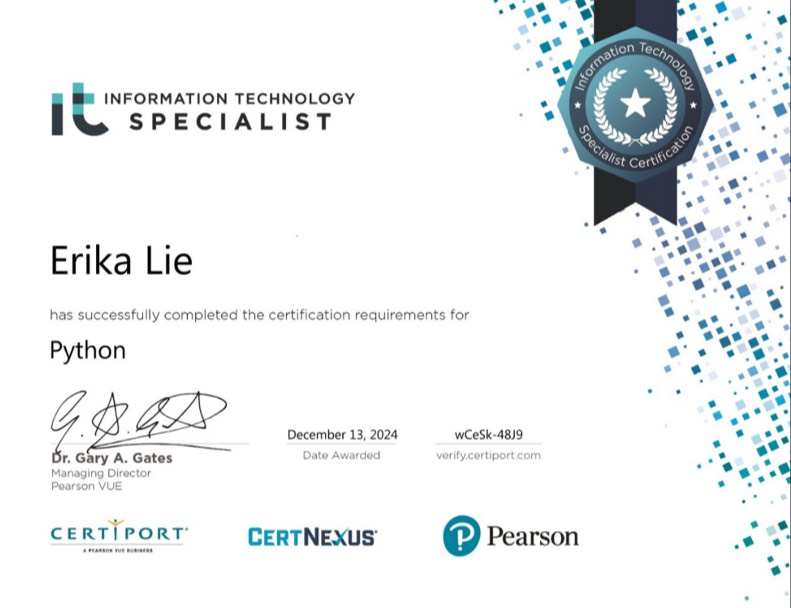
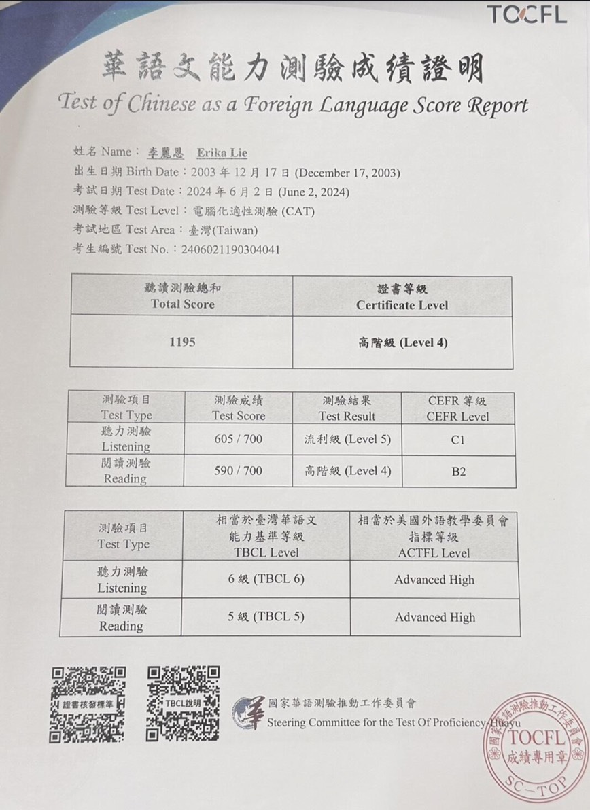
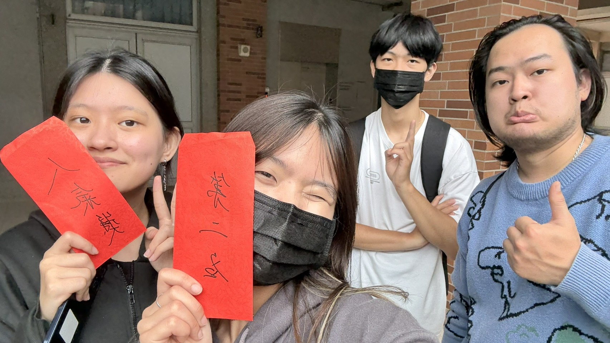
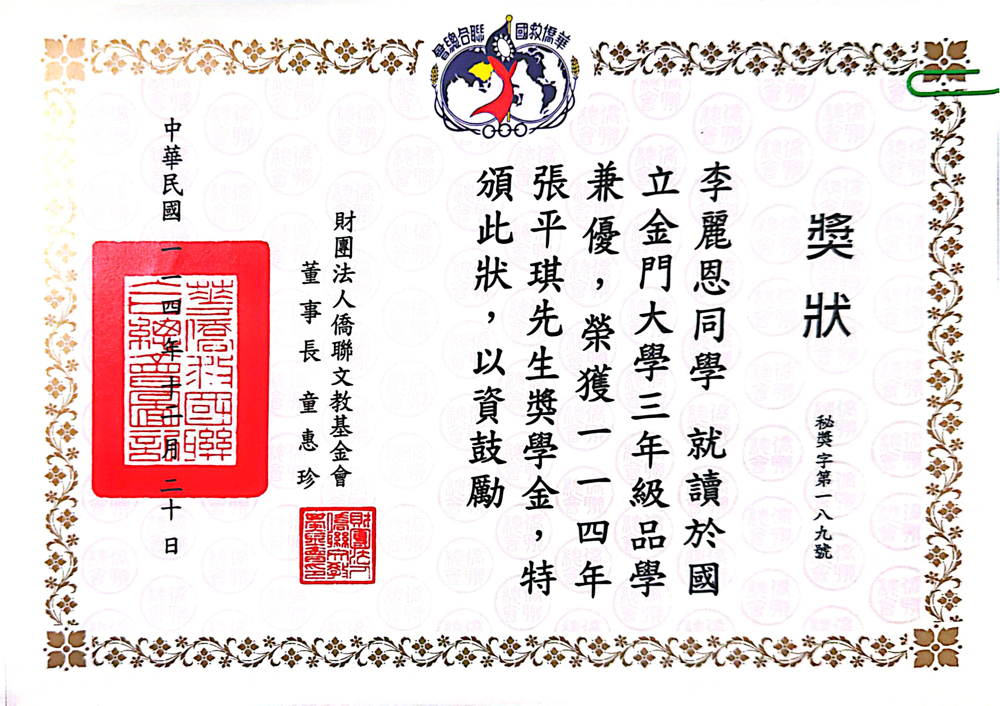
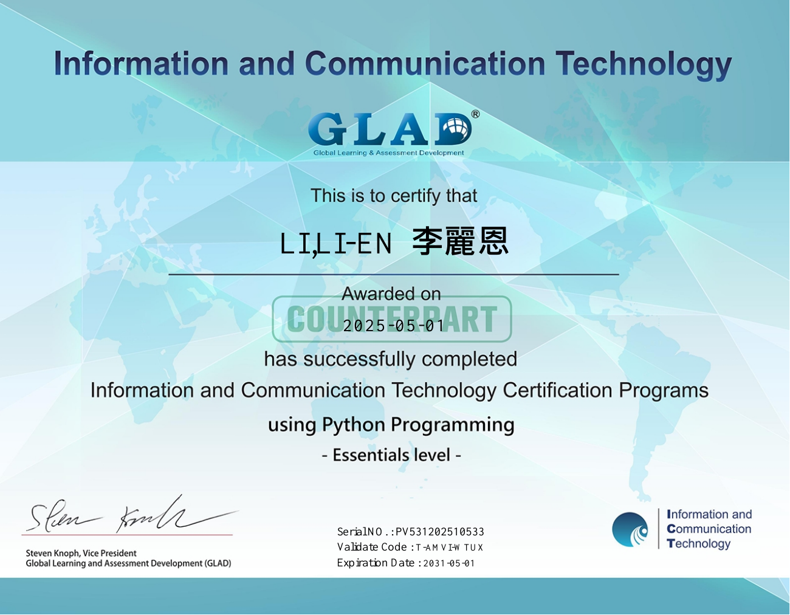
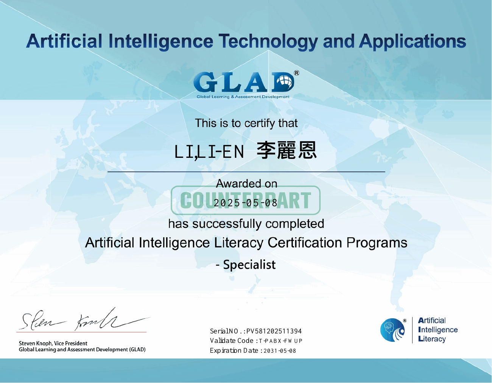

ITS Python
Information Technology Specialist Python certification · 2024.12.13
專題成果、專業證照與獎助學金，記錄持續投入學習的歷程。

Information Technology Specialist Python certification · 2024.12.13

總分 1195 · 高階級 Level 4；聽力 605（Level 5）、閱讀 590（Level 4）。

畢業專題第二名 · 團隊成果紀錄

English Key_in · 25 words/min
2024.11.09

財團法人僑聯文教基金會
114 年（2025）

GLAD · Python Programming · Essentials level
2025.05.01 · 查看證書 PDF ↗

GLAD · Artificial Intelligence Literacy · Specialist
2025.05.08 · 查看證書 PDF ↗